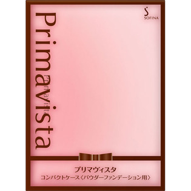

返回列表
产品名称：プリマヴィスタ コンパクトケース＜パウダーファンデーション用＞

花王 プリマヴィスタ コンパクトケース＜パウダーファンデーション用＞ １個
メーカー 花王
JANコード 4901301332172
商品の特徴
プリマヴィスタ パウダーファンデーション用のコンパクトケースです。
ファンデーション、スポンジはセットされていません。スポンジは、別売りのレフィルに付いています。
成分・分量
-
用法及び用量
○コンパクトケースへのセット方法
フィルムを持ち上げ、ケースの左側に中皿をななめにさしこみ、右ふちを上からカチッと音がするまで押してください。
○コンパクトケースから取り出す方法
中皿の右ふちに親指の腹をあて、軽く左に押しながら上へ取り出してください。